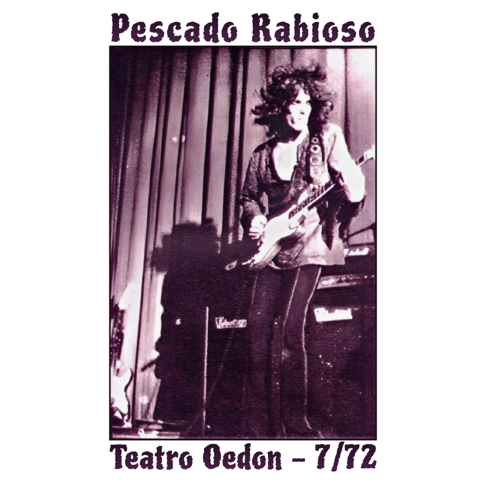

Julio, 1972 - Ciudad de Buenos Aires, Argentina

Entre los registros más intensos y buscados por los seguidores del rock argentino se encuentra esta grabación de 1972. Con Pescado Rabioso, Luis Alberto Spinetta buscó un sonido más crudo, eléctrico y visceral, influenciado por el blues rock y el hard rock de la época.
El concierto refleja una etapa de enorme energía dentro del grupo, con interpretaciones que incluyen largas secciones instrumentales y un sonido más pesado que el de los discos de estudio. La guitarra de Spinetta alterna momentos de furia eléctrica con pasajes melódicos, sosteniendo la identidad de la banda en vivo.
Este documento es particularmente valioso dado que el grupo dejó relativamente pocos registros en vivo durante su influyente existencia entre 1971 y 1973.
Material difundido con fines culturales y de preservación histórica.